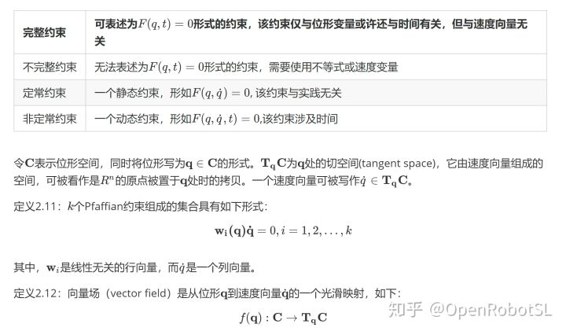
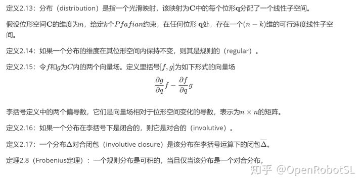

Home
一些专业的定义或定理可以对事物的规律进行简洁的描述，揭示规律的本质，因此，随着对机器人运动学研究的深入，很有必要温习一下运动学的相关定义及定理。
基础定义
定义2.1：一个系统（system）是空间X中的一个点集。
定义2.2：一个系统的位形（configuration）是指系统中各点的位置。
定义2.3：位形空间（configuration）是给定系统的全部位形组成的一个度量空间。
定义2.4：一个系统的自由度（degrees of freedom）是指其位形空间的维度。（一个不太精确但大致相当的定义是：用于确定一个位形所需的最少实数数目）。
定义2.5 ：位移（displacement）是指位形的变化，该变化并不会改变系统中任意两点间的距离，也不会改变系统的手性。
定义2.6：刚体（rigid body）是指仅会产生位移的一个系统。
定义2.7：转动（也称旋转，rotation）是指至少有一个固定点的位移。
定义2.8：平移（translation）是所有点沿平行线移动相同距离的一个位移。
定理2.1：带有函数组合（functional composition）的位移，构成一个群（group）。
定理2.2：对于欧式空间$\mathbf E^2$或$\mathbf E^3$中的任何位移$D$以及任意一点$O$，该位移$D$均可表述为一个平移和一个关于点$O$的旋转的叠加。
推论2.1：给定任意一点E^2，E^3,任何微分运动或速度都可以被分解为一个平移部分以及一个关于点o的旋转部分。
平面运动学
定理2.3：一个平面位移可以由任意两点的运动来完全确定。
该定理有很多应用，例如相机捕捉物体做平面位移时，可以通过定位物体上两个marker点，确定物体的运动。最近一个项目中要对工件安装在平台上的误差进行补偿，那么首先要识别出物体的平动和旋转，那么可以根据该定理来实现。
定理2.4：任何一个平面位移要么是平移，要么是旋转。
定理2.4另一种描述：每一个平面运动都是关于投影平面中一点的旋转。
推论2.2：将其推广到微分运动（即速度），每个平面速度都是关于投影平面内一个中心点的角速度。
瞬心极迹
任何平面运动的路劲都可通过平面内的两条曲线来描述，这些曲线被称为瞬心极迹（centrode）。其中的一条曲线，被称为瞬心极 迹，它沿着另一条被称为固定瞬心迹迹的曲线做无滑动的纯滚动。瞬心极迹提供了一种对平面运动的规范描述。
固定瞬心极迹是指旋转极点在固定平面内的轨迹图（locus）。运动瞬心极迹则是值旋转极点在运动平面内的轨迹图。随着运动瞬心极迹在固定瞬心极迹上做无滑动的纯滚动，两条曲线的接触点即为瞬心。
球面运动学
球面运动是指在一个球面上所有可能的运动。
定理2.5 ：给定球面上的两个点，如果它们不是对极点（antipodal）,那么球面上的位移可以通过这两点的运动而完全确定。
定理2.6（欧拉定理）：对于每个空间旋转，存在一条由对你的固定点组成的直线。换而言之，关于一点的任何旋转都是关于一条直线的旋转，该直线被称为旋转轴线（rotation axis）。
空间运动学
空间运动指的是空间中任意可能的运动。
螺旋位移（screw displacement）：绕空间中的某条轴线旋转，同时沿该条轴线平移。
定理2.7（Chasles theorem）：每个空间位移都是由关于某条轴线的旋转以及沿同一轴线的平移叠加而构成的。
定义2.9：旋量（screw）是空间中带有相关旋距（pitch）的一条线。其中，选举时指旋量的线性分量与角度分量之间的比率。
定义2.10：运动旋量（twist）是指旋量外加一个标量幅值，它给出了旋量轴的一个旋转加上沿旋量轴的一个平移。旋转角度为运动旋量的幅值大小，而平移距离则等于该幅值与选举的乘积。因此，旋距是平移与旋转之间的比率。
运动学约束
操作通常会涉及接触，而接触通常可以从运动学约束（kinematic constraint）方面进行建模，运动学约束是指对物体可能运动的约束。
对于一个动态约束（运动着的约束），称为非定常约束（rheonomic）约束，固定约束称为定常（scleronomic）约束


参考文献
机器人操作中的力学原理[M]，Matthew T. Masson 著，贾振中，万伟伟译. 北京：机械工业出版社，2017.11
======================================================================
我的测试结果及程序
下面是我测试的代码：